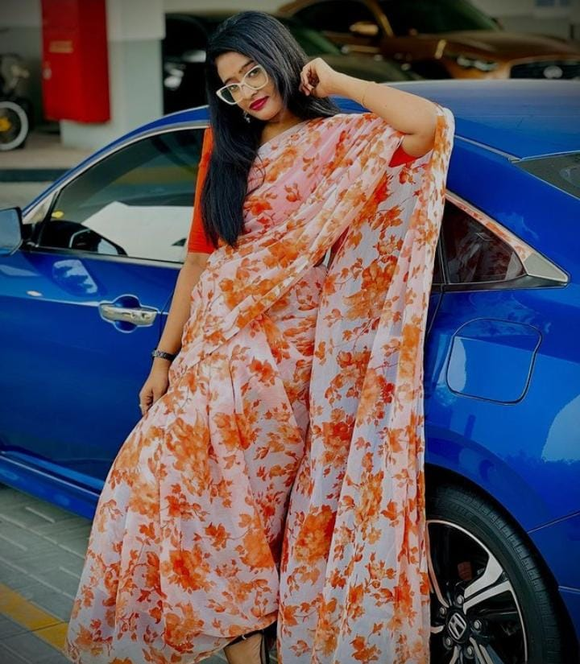

I'm a passionate entrepreneur from Adoor, Pathanamthitta, living in Dubai, where I'm chasing dreams and helping shape the future by running a daycare with my mom and sister. I'm also a journalism degree holder with a zest for life, known for spreading joy and positivity.
Professional Bio
Mariya P Alex is a driven entrepreneur from Adoor, Kerala, now based in Dubai. With a journalism background, she’s dedicated to nurturing communities by managing a daycare with her family. Her positive attitude, independence, and ambition are central to her identity.
Gallery

Connect With Me
Follow me on Instagram and Facebook for more updates!
I love reading, traveling, and exploring new cultures. When I'm not working, I enjoy spending time with family and friends, indulging in photography, and finding new adventures!
Projects
My most recent project is managing a daycare center with my family. I'm also exploring new business opportunities that merge technology and education to support the growth of communities.